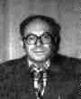

Leonid Kantorovich studied at Leningrad State University, receiving his doctorate in mathematics in 1930. From 1934 to 1960 he was a professor at Leningrad. He held the chair of mathematics and economics in the Siberian branch of the USSR Academy of Sciences (1961-1971), then directed research at Moscow's Institute of National Economic Planning (1971-76).
Kantorovich was one of the first to use linear programming as a tool in economics. His background was entirely in mathematics but he showed a considerable feel for the underlying economics to which he applied the mathematical techniques.
Kantorovich was a joint winner of the 1975 Nobel Prize for economics
for work on the optimal allocation of scarce resources.
An autobiography of Kantorovich and his Nobel prize presentation
speech is at Oslo,
Sweden